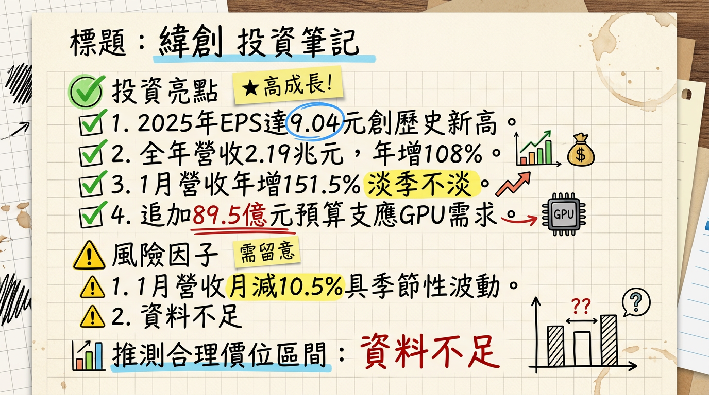

3231 緯創 (Wistron) 深度研究報告：從筆電代工轉身，跨入 AI 算力基礎設施的新紀元
一句話摘要
緯創已成功轉型為 AI 伺服器核心供應商，2025 年營收突破 2.1 兆元，躍升為電子代工「二哥」，2026 年將受惠於 GB300 機櫃放量與網通業務 10 倍成長，獲利有望挑戰歷史新高。
公司概覽
緯創目前為全球第二大電子代工製造服務商（EMS/ODM），其業務重心已從傳統的筆記型電腦（NB）全面向 AI 伺服器、高效能運算（HPC）及資料中心轉型。
2025-2026 營收結構預估表格| 業務板塊 | 營收佔比 | 核心產品 / 服務 | 成長動能 |
|---|---|---|---|
| 伺服器相關 (含緯穎) | 70% - 75% | NVIDIA GPU 基板、GB200/300 運算托盤、L10/L11 整機櫃 | AI 需求爆發、xAI 訂單 |
| 3C 電子 (NB/DT) | 20% - 25% | 筆記型電腦、桌上型電腦、顯示器 | AI PC 換機潮、出貨量約 2,410 萬台 |
| 網通及其他 | 5% 以內 | 高速交換機 (Switch)、智慧醫療、車電 | 2026 年預計 10 倍成長空間 |
核心競爭優勢
財務分析
最近 6 個月月營收趨勢表格 (2025.08 - 2026.01)| 月份 | 營收金額 (億元 TWD) | 月增率 (MoM) | 年增率 (YoY) | 備註 |
|---|---|---|---|---|
| 2026/01 | 2,283.67 | -10.53% | +151.54% | 淡季不淡，歷史同期新高 |
| 2025/12 | 2,552.54 | -9.04% | +141.59% | AI 伺服器放量 |
| 2025/11 | 2,806.24 | +51.64% | +194.64% | 單月歷史新高 |
| 2025/10 | 1,850.62 | -9.03% | +92.20% | 產品轉換過渡期 |
| 2025/09 | 2,034.37 | +17.84% | +109.94% | 季末出貨效應 |
| 2025/08 | 1,726.43 | -9.95% | +92.21% | AI 訂單開始拉升 |
- 2024 (實際)： 營收 1.04 兆元，EPS 6.11 元。
- 2025 (自結)： 營收 2.19 兆元 (YoY +108%)，EPS 9.04 元 (歷史新高)。
- 2026 (法人預估)： 營收挑戰 2.9 - 3.03 兆元，EPS 預估 12.3 ~ 14.22 元。
法說會重點與管理層指導
- 訂單能見度： 董事長林憲銘表示，AI 基礎建設投資仍處於成長初期（1.5 波），訂單已排至 2027 年。
- 網通業務： 預期 2026 年為爆發元年，因取得北美 CSP 大客戶交換機訂單，營收具 10 倍成長潛力。
- 筆電展望： 態度相對保守，預估 2026 年受成本轉嫁影響，出貨量可能持平或微幅衰退。
- 產能利用率： 美國德州廠 2026 Q1 量產，墨西哥廠 L10 良率已與台灣同步。
券商觀點
券商目標價與評等表 (2025.10 - 2026.02)| 券商名稱 | 評等 | 目標價 (TWD) | 2026 EPS 預估 | 報告日期 |
|---|---|---|---|---|
| 摩根士丹利 (MS) | 優於大盤 | 215 | > 13.0 | 2026/01/16 |
| 富邦證券 | 增加持股 | 210 | 12.02 | 2026/01/07 |
| FactSet 綜合 | 中位數 | 190 | 12.64 | 2026/02/13 |
| 高盛證券 | 買進 | 188 | 11.5 | 2025/10/29 |
財報深度分析
利潤率趨勢表格| 指標 | 2025 Q1 | 2025 Q2 | 2025 Q3 | 2025 Q4 (自結) |
|---|---|---|---|---|
| 毛利率 (GPM) | 7.10% | 6.50% | 7.39% | 5.62% |
| 營業利益率 (OPM) | 4.30% | 4.10% | 4.78% | 3.53% |
| 稅後淨利率 (NPM) | 1.40% | 1.25% | 1.30% | 1.13% |
- 分析： 2025 Q4 毛利率稀釋至 5.62%，主因為 Pass-through (代採購零件) 模式的整機櫃佔比拉高。雖然營收總額暴增，但會計結構導致毛利率下滑，法人視其為「產品組合調整」的短線陣痛。
- 資本支出 (CapEx)： 2025 年約 355 億元。2026 年 1 月董事會再追加 89.54 億元 預算購置新竹廠設備，顯示需求極度強勁。
股權異動
- 經理人申報轉讓： 2026/01/26 張聰耀轉讓 250 張；2025/10/14 林福謙配偶轉讓 400 張（多屬例行理財或納稅需求）。
- 庫藏股： 近期無執行計畫。
- 股利政策： 2025 年配發 3.799 元 現金股利，配發率約 62%，隨 EPS 提升，2026 年股利可期。
產業分析
2025-2026 全球 AI 伺服器代工競爭格局| 排名 | 公司 | 市佔預估 | 優勢 |
|---|---|---|---|
| 1 | 鴻海 (Foxconn) | 40-50% | 垂直整合能力、全球最大產能 |
| 2 | 緯創 (Wistron) | 20-25% | NVIDIA 基板主供、xAI 核心供應商 |
| 3 | 廣達 (Quanta) | 20-25% | CSP 客戶關係穩健 (Google/AWS) |
| 4 | 超微電腦 (SMCI) | 5-8% | 靈活配置、企業級市場 |
近期催化劑
- 利多：
* 網通產品取得北美 Tier 1 客戶訂單。
* 液冷滲透率從 32% 提升至 47%，緯創毛利結構有望優化。
- 利空：
* 2026 年下半年關稅不確定性增加，需觀察墨/美廠產能調節。
⭐ 成長動能時間軸
- 2025 Q4： GB200 開始初步交付，新竹 AI 智慧園區一廠滿載。
- 2026 Q1： 美國達拉斯廠正式量產，服務 NVIDIA 次世代架構。
- 2026 Q2： 新竹 AI 二廠（304.8 億元投資案）設備進駐，鎖定 GPU 運算板訂單。
- 2026 H2： Blackwell Ultra (GB300) 世代成為市場主流，機櫃預估年出貨突破 1.1 萬櫃。
- 2027 年： 網通與 AI 醫療業務營收佔比首度突破 10%，利潤結構趨於多元。
2026 展望
- 成長動能： AI 伺服器營收佔比將正式突破 80%，公司性質已轉為純度極高的「算力概念股」。
- 風險： 若高單價 Pass-through 產品持續拉高，毛利率維持在 6% 以下可能壓抑本益比提升；另需注意鴻海在 L10 領域的強勢競爭。
投資結論
* 合理評價區間： 根據歷史平均 15-18 倍本益比，目標價位落於 185 - 215 元。
* 操作策略： 建議在 150-160 元區間進行長期佈局，迎接 2026 年獲利爆發。
本報告由 AI 自動產生，資料來源為公開網路資訊，僅供參考，不構成投資建議。產生時間：2026-03-01 02:11
📊 資訊卡


